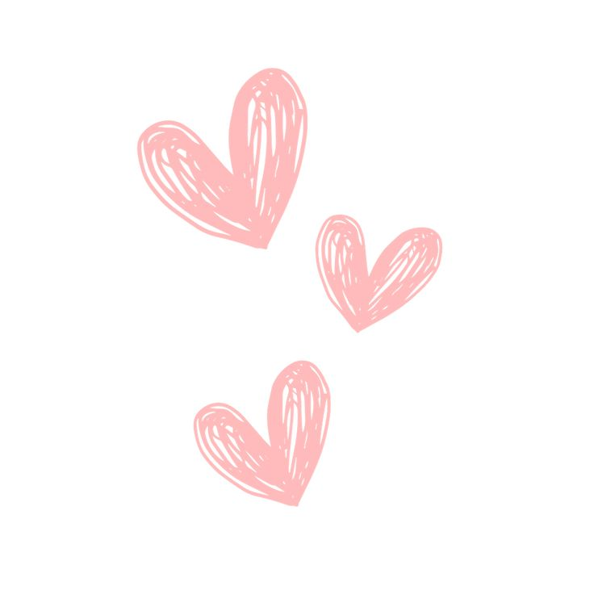
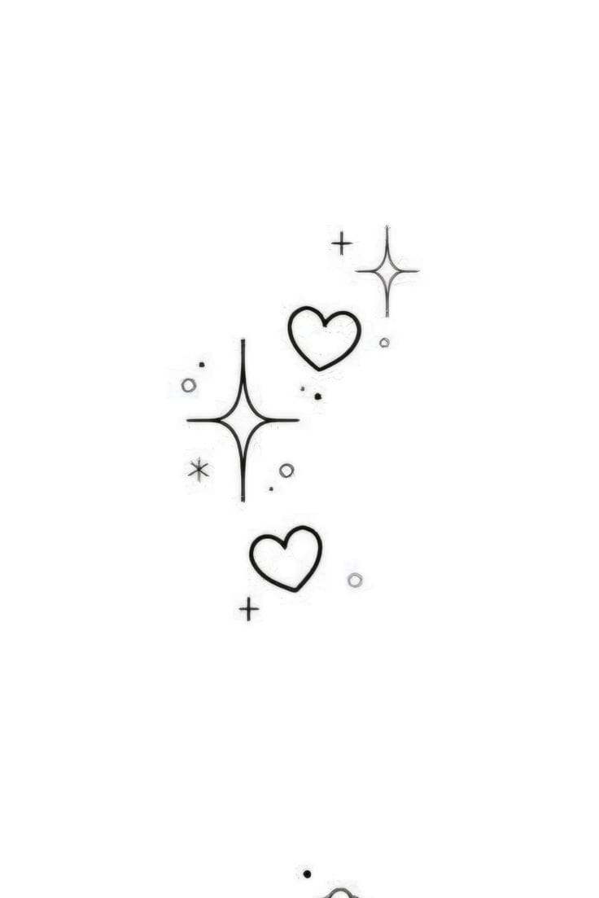

Hola pequeño yose, tiene demasiado que no te hago algo asi... quiero que sepas que te amo demasiado, incluso mas que antes, si me sigues gustastando y mas que antes, amo tenerte conmigo, amo y me gusta tanto sentirte serca, me encanta estar acostada contigo en tu pecho.... hay momentos que no estamos nada bien y quizas sea seguido ya, quisiera que todo fuera igual de bonito que antes, que haya mas tiempo juntos, mas salidas, mas momentos diferentes, mas cosas juntos...